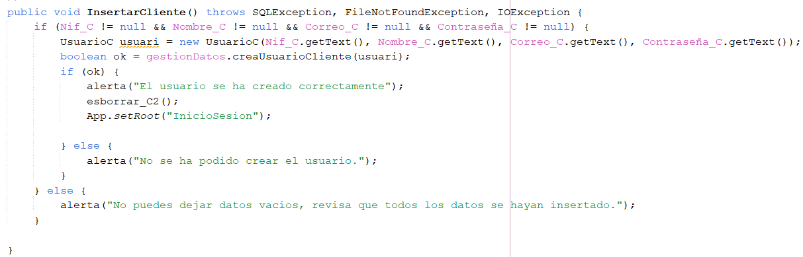
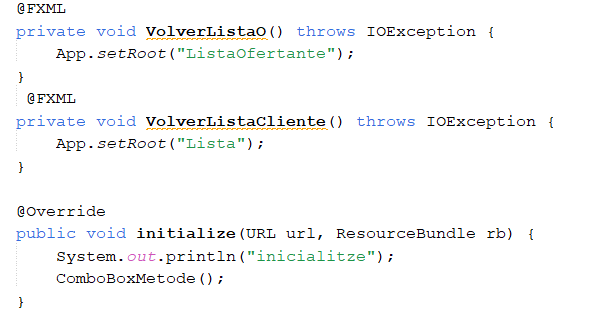
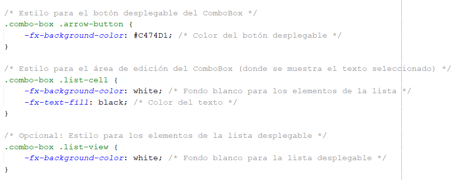

En el aspecto de la programación de la aplicación, he empleado JavaFX y utilizado el
MVC(modelo vitsa controlador).
En este caso el MVC hace referencia a la estructura de los ficheros que generan la
aplicación.
Modelo
Inicialmente hemos crado los modelos necesarios, o lo que es lo mismo, he generado
las clases donde estaran todos los datos de Usuarios y animales.
 En este caso el proceso se ha repetido 3 veces: 1 modelo para los Clientes
1 modelo para los Ofertantes
1 modelo para los Perfiles de Animales
En el apartado de modelo también contamos con la clase que gestiona los datos, es decir, se encarga
de la unión de las consultas de la base de datos, con el propio código de javaFX.
En el aspecto de lo que se gestiona en esta clase, consiste básicamente en generar aleatoriamente
una ID para diferenciar los tipos de usuarios que entran en la aplicación, incluyendo una id para diferenciarlos de
los animales.
De manera que una vez generada esa id la implementamos en el método de creación de usuarios o animal.
Una vez completada la creación de los usuarios establecemos el método para tener la capacidad de
modificar a los usuarios y , en el caso de la estructura gráfica, completar la información completa del usuario,
ya que al registrarse no se recopila toda la información que precisan los usuarios.
Esto se ha establecido así para agilizar el inicio de sesión sin la necesidad de incorporar tanta
información.
Y para finalizar los partados referentes a los usuarios, se crea un método donde se establece una consulta
que buscará coincidencias entre los datos con la información que recopilará para poder generar correctamente
el inicio de sesión.
En lo que respecta a la creación de animales, además de la generación del ID específico como se ha mencionado
anteriormente, generamos un método que devuelva el identificador del ofertante que se ocupara del animal
para posteriormente crear el perfil del animal.
Después preparamos el modelo para que se recopile la información que se printara en la lista una vez esta sea
filtrada por alguna zona.
Y como último método está el que gestiona la recuperación de la información de un cliente mediante su identificador
para poder mostrar su información, contactar con el usaurio y poder tramitar la adopción individualmente entre
los propios usuarios.
En este caso el proceso se ha repetido 3 veces: 1 modelo para los Clientes
1 modelo para los Ofertantes
1 modelo para los Perfiles de Animales
En el apartado de modelo también contamos con la clase que gestiona los datos, es decir, se encarga
de la unión de las consultas de la base de datos, con el propio código de javaFX.
En el aspecto de lo que se gestiona en esta clase, consiste básicamente en generar aleatoriamente
una ID para diferenciar los tipos de usuarios que entran en la aplicación, incluyendo una id para diferenciarlos de
los animales.
De manera que una vez generada esa id la implementamos en el método de creación de usuarios o animal.
Una vez completada la creación de los usuarios establecemos el método para tener la capacidad de
modificar a los usuarios y , en el caso de la estructura gráfica, completar la información completa del usuario,
ya que al registrarse no se recopila toda la información que precisan los usuarios.
Esto se ha establecido así para agilizar el inicio de sesión sin la necesidad de incorporar tanta
información.
Y para finalizar los partados referentes a los usuarios, se crea un método donde se establece una consulta
que buscará coincidencias entre los datos con la información que recopilará para poder generar correctamente
el inicio de sesión.
En lo que respecta a la creación de animales, además de la generación del ID específico como se ha mencionado
anteriormente, generamos un método que devuelva el identificador del ofertante que se ocupara del animal
para posteriormente crear el perfil del animal.
Después preparamos el modelo para que se recopile la información que se printara en la lista una vez esta sea
filtrada por alguna zona.
Y como último método está el que gestiona la recuperación de la información de un cliente mediante su identificador
para poder mostrar su información, contactar con el usaurio y poder tramitar la adopción individualmente entre
los propios usuarios.
Vistas
En el aspecto de las vistas, he necesitado un total de 15 ficheros de vista.
Estos son los que se encargan de la parte gráfica de la aplicación, los cuales estan en formato .fxml.
Al utilizar SceneBuilder se ejecuta esta parte gráfica que nos permite diseñar mediante Controles la
parte gráfica de la aplicación.
Para que estas Vistas sean funcionales entre si, se necesitan controladores, que se relacionan con el
fichero fxml desde la asignación que se ve desplegada en la imagen.
En lo que respecta a los controles, su configuracion se divide en tres secciones:
·Propiedades
·Layout
·Código

En lo que respecta al las propiedades, únicamente es la configuración
donde se puede incorporar el documento CSS para la edición automaica
de los controles y donde modificar el aspecto del control seleccionado.
Por otra parte, el Layout son configuraciones más complejas, además de
el poder modificar la posición del control mediante coordenadas.
Y finalmente la configuración del código del control, que es donde
podemos establecer una id para poder trabajar con los controles
que necesitemos y de la misma manera estableccer las acciones que
queramos que realicen incorporando los métodos que creemos en los
controladres.
Controladores
En lo que respecta a los controladores partimos de una cantidad de 4 Controladores.
Los cuales son reconocidos por los nombres: ·Primary
·Secondary
·ModificarUsuarios
·PerfilAnimal
PRIMARY:
En el primer controlador, nos encargamos de las uniones básicas entre las pantallas los métodos que se encargan
de crear a los usuarios y el poder iniciar sesión con sus perfiles.
Pero lo primero antes de empezar con al creación de métodos, se deben establecer los enlaces con los controles
de la vista para poder emplearlos bien en el código con la sintaxis siguiente:
Una vez establecidos correctamente insertaremos los enlaces para poder llamar a la conexión con la base de datos
y al modelo donde gestionamos los datos, esto es algo que se aplica en todos los controladores.
Y finalmente ya comenzamos con las creaciones de métodos, en este caso la creación y el iniciar sesión de los mismo.
Estos métodos estan realcionados con el Modelo de gestión de datos, por lo que los datos pasan ya para ser
traspasados y devueltos con lo que se precisa para efectuar las acciones.

Otra parte que gestiona el primer controlador es la búsqueda de clientes.
Y para completar este controlador, solo falta generar los métodos de el salto de alertas,
limpiar los textos al terminar y las conexiones para ir saltando de una página a otra.
Secondary
En el segundo controlador se encuentra todo lo relacionado con las listas, además al MenuBar para
saltar a las diferentes opciones del Usuarios posteriormente de iniciar sesión.
En este caso el usuario de Ofertante es el que tiene más opciones, entre ellas comparte dos con el Cliente que
son las únicas de las que dispone el Cliente en el MenuBar.
Como código en este controlodor, solo contamos de las conexiones para saltar de páginas y con el programa de
el comboBox, junto con el printar de la lista en función de la zona que se seleccione en el comboBox.
Programa para el comboBox.
Mostrar la lista de animales en función de la zona seleccionada.
Y finalmente las conexiones entre páginas.
Modificar Usuarios
Este controlador cumple únicamente la función de modificar a los Usuarios en sus respectivas pestañas.
Este controlador es necesario ya que los ComboBox solo pueden inicializarse al mismo tiempo que la primera
pantalla del controlador, de lo contrario se producirán errores.
De manera que, además de el comboBox, tambien cuenta con los métodos para modificar el usuario y para retornar
a la lista desde la que ha entrado el usuario.
El código para implementar el comboBox es igual que en controlador Secondary.
Cada uno de los métodos siguientes son los que se encargan de la modificación de los usuarios, tanto de los ofertantes
como de los clientes.
Y por útimo las conexiones basicas para ir o volver en funcion del usuario con el que se haya iniciado sesión.

Para que estos métodos funcionen, se aplicaran nuevamente los métodos del primer controlador, tanto los de borrado como
los de las alertas.
Perfil Aimal
Al igual que con el controlador anterior, al contener comboBox requiere de su propio controlador.
Este controlador contiene los métodos necesarios para lo que respecta a la creación y/o modificación de
los perfiles de animales, además de sus respectivo métodos para volver a la lista del Ofertante.
(Que es el único con los privilegios para crearlos y editarlos)
El método de creación de animal es de los más importante, ya que es el que nos permitirá trabajar tanto con las
listas como con las relacion m-n para mantener la integridad de nuestros datos.
Y finalmente las conexiones para volver a la lista de origen.
CSS
Finalemente como diseño de programa, está la parte de estilos.
Esta se ha llevado a cabo mediante un fichero CSS, donde se le han aplicado estilos al MenuBar, a los botones y a
las comboBox.
En el caso de los botones, es el que más estilos se le han aplicado, muchos de los cuales comparte con el MenuBar.
El apartado del comboBox es el que más se puede distinguir de los otros dos controles modificados.
